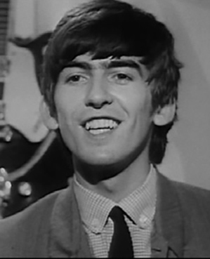

FAST FACTS!
Born: Liverpool, England (February 25, 1943)
Died: Los Angeles, CA (November 29, 2001; aged 58) He died of lung cancer. His friend, Eric Clapton, organized a televised concert, called the Concert for George, in his memory at the Royal Albert Hall.
His main role was being the lead guitarist. He then learned how to play the sitar from the great sitar player, Ravi Shankar.
Once John and Paul would come into the studio with the songs they've written, George helped find the right chords for the songs. He recorded his own songs such as "Don't Bother Me", "If I Needed Someone", "Taxman", and "Old Brown Shoe". His most notable songs are "While My Guitar Gently Weeps", "Something", and "Here Comes the Sun".
He met his first wife, Pattie Boyd, on the set of A Hard Day's Night - she appeared in the train scene. They were married from 1966 to 1977. He was then married to Olivia Harrison from 1978 until his death in 2001. They had a son, Dhani, who is also a musician.
By the mid 1960's, George became hugely influenced by Indian culture, especially Hinduism. His sitar playing first became evident in the song "Norwegian Wood". He also wrote the songs "Love You Too" and "Witin You Without You" in Indian style.
In 1971, George organized a charity concert, The Concert For Bangladesh, to help aid war refugees in Bangladesh.